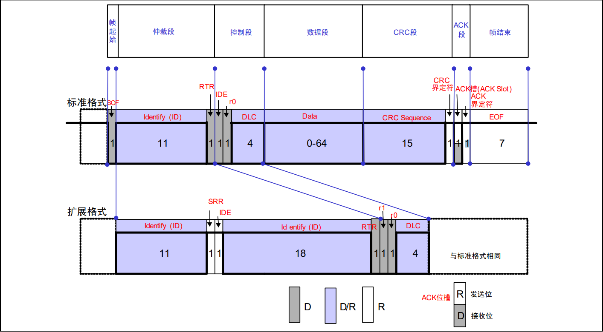

下面是学习 Linux 源码中与 CAN 总线相关部分的笔记，基于 Linux 5.10 版本。
CAN 总线
- 多主控制
- 总线空闲时所有单元都可以发送消息（CSMA）
- 最先访问总线的单元可以获得发送权
- 多个单元同时发送时，通过消息标识符来确定发送权（CD+AMP）
- 没有 “地址”，通过标识符来区别消息，使得节点无需了解其他节点的状况，相对独立工作
- 总线上的电平分显性电平（0）与隐性电平（1）
- 广播形式，即在同一时刻网络上所有节点侦测的数据是一致的。
数据帧格式

- 帧起始：一个显性位
- 仲裁段：即标识符，11 位，加上一个 RTR 位用于区别数据帧和远程帧
- 控制段：两个保留位，4 位数据长度码（DLC），表示数据载荷（0-8 字节）
- 数据段：包含 0-8 字节数据
- CRC 段：15 位 CRC 顺序 + 1 位 CRC 界定符
- ACK 段：确认是否正常接收。1 位 ACK 槽 + 1 位 ACK 界定符
- 帧结束：7 位隐性位
非破坏性仲裁
| 起始位 | 10 | 9 | 8 | 7 | 6 | 5 | 4 | 3 | 2 | 1 | 0 | 剩余部分 | |
|---|---|---|---|---|---|---|---|---|---|---|---|---|---|
| 节点 1 | 0 | 0 | 0 | 0 | 0 | 0 | 0 | 0 | 1 | 1 | 1 | 1 | |
| 节点 2 | 0 | 0 | 0 | 0 | 0 | 0 | 0 | 1 | - | - | - | - | |
| 总线 | 0 | 0 | 0 | 0 | 0 | 0 | 0 | 0 | 1 | 1 | 1 | 1 |
Linux 下的 CAN
Linux 下最早使用 CAN 的方法是基于字符设备来实现的，SocketCAN 则使用 socket 接口和 linux 网络协议栈，使得 CAN 设备驱动可通过网络接口调用。SocketCAN 接口设计接近 TCP/IP 协议，使程序员能比较容易的学习和使用。
SocketCAN 允许多个应用程序同时访问一个 CAN 设备，且单个应用程序可访问多个 CAN 网络，由于其构建于 linux 网络层上，可以直接使用已有的队列功能，CAN 控制器的设备驱动将自己作为一个网络设备注册进 linux 的网络层。
首先我们要打开一个套接字，由于 SocketCAN 实现了一个新的协议族，所以需要将 PF_CAN 作为第一个参数传递给 socket 系统调用。假如我们打开一个 CAN_RAW 协议的套接字：
1 | s = socket (PF_CAN, SOCK_RAW, CAN_RAW); |
创建套接字后，我们一般使用 bind 系统调用去将其绑定到一个 CAN 接口上（与 TCP/IP 不同，因为 CAN 寻址机制不同）。然后我们就可以用 recv ()/send ()，recvmsg ()/sendmsg () 或 recvfrom ()/sendto () 来读写数据了。
CAN 帧
5.10 版的 CAN 帧结构体定义如下：
1 | /include/uapi/linux/can.h |
注意在 5.11 中，can_dlc 被弃用了，使用 len 来代替。实际上表示同一个东西，都表示有效负载长度，只是 can_dlc 的命名有误导性（Data Length Code）
1 | //include/uapi/linux/can.h |
sockaddr_can
和 PF_PACKET 套接字类似，sockaddr_can 结构有一个接口编号，绑定在一个特定的接口上：
1 | //include/uapi/linux/can.h |
为了决定接口编号，需要使用 ioctl () 函数，例如我们想要将套接字绑定在 can0 设备上：
1 | int s; |
如果 can_ifindex 设为 0，那么将绑定到所有 CAN 接口上，此时套接字将接收来自所有 CAN 接口的 CAN 帧。如果要知道源 CAN 接口，需要使用 recvfrom 系统调用。如果想要发送，则需要使用 sendto 系统调用来指定传出接口。
读写
读示例：
1 | struct can_frame frame; |
写也是类似的：
1 | nbytes = write (s, &frame, sizeof(struct can_frame)); |
如果该套接字绑定了所有 CAN 接口（addr.can_ifindex == 0），可以使用 recvfrom 来获取源 CAN 接口的信息：
1 | struct sockaddr_can addr; |
要在绑定到所有 CAN 接口的套接字上写 CAN 帧，必须明确指定传出接口：
1 | strcpy(ifr.ifr_name, "can0"); |
从套接字读取消息后，可通过 ioctl 调用获取准确时间戳：
1 | struct timeval tv; |
CAN FD
一般来说 CAN FD（CAN flexible data rate）的处理和前面描述的示例类似，CAN FD 的 CAN 控制器支持 CAN FD 帧仲裁阶段和有效负载阶段的两种不同比特率，以及高达 64 字节的有效负载。这样破坏了内核接口（ABI），因为它们依赖于具有定长（8 字节）的有效载荷的 CAN 帧。因此 CAN_RAW 套接字支持一个新的套接字选项 CAN_RAW_FD_FRAMES，它可将套接字切换到能同时支持 CAN FD 帧和经典 CAN 帧的处理的模式。
1 | //include/uapi/linux/can.h |
CAN 帧过滤器
使用 can_filter 可以过滤一些我们不关心的 CAN 帧，仅接受我们需要的帧：
1 | struct can_filter { |
过滤器匹配当且仅当
1 | <received_can_id> & mask == can_id & mask |
使用示例：
1 | struct can_filter rfilter [2]; |
安全钩函数
SocketCAN 本身并未打钩函数，但是由于 SocketCAN 走的是 linux 的套接字的机制，而套接字是有钩函数的，例如：
socket_create：创建套接字时的权限检查socket_post_create：为套接字创建一个安全结构体socket_socketpair：创建套接字对的权限检查socket_bind：bind 前的检查socket_connect：connect 前的检查socket_listen：listen 前的检查socket_accept：接受一个新连接前的检查socket_sendmsg：发消息前的检查socket_recvmsg：收消息前的检查socket_getsockname：获取本地套接字地址（名字）前的检查socket_getpeername：获取远端套接字地址（名字）前的检查socket_getsockopt：获取套接字选项前的检查socket_setsockopt：设置套接字选项前的检查socket_shutdown：关闭前的检查socket_sock_rcv_skb：检查传入网络数据包的权限sk_alloc_securitysk_free_securitysk_clone_securitysk_getsecid